Proporsi Sentimen
Distribusi Rating Bintang
Rasio Rating Pengguna
🔍 Fakta Utama & Interpretasi Analisis
📈 Loyalitas Pengguna & Brand Advocacy
Dominasi rating bintang 5 yang mencapai 38.02% (1,014 ulasan) memperlihatkan tingkat apresiasi yang sangat tinggi terhadap fungsionalitas inti aplikasi. Hal ini menunjukkan kepuasan pengguna yang kuat dan merupakan aset utama dalam menjaga loyalitas pengguna.
⚠️ Titik Kritis Keluhan & Potensi Churn
Tingkat komplain bintang 1 yang berada di angka 32.81% (875 ulasan) merupakan critical path yang memerlukan tindakan segera. Isu utama terdeteksi pada kategori Masalah Notifikasi dan Akses (terkait: Notifikasi tidak muncul dan kendala akses akun pengguna). Masalah ini menjadi pemicu utama ulasan negatif dan berpotensi meningkatkan tingkat churn pengguna secara signifikan.
Detail Kategori Isu (Berdasarkan Sentimen & Dampak)
| Sentimen | Kategori Bisnis | Grup Isu | Jumlah Ulasan | Rata-rata Rating | Contoh Isu |
|---|---|---|---|---|---|
| negatif | Masalah Notifikasi dan Akses | NOTIFICATION_AND_ACCESS_ISSUE |
169 | 1.32 ★ | Notifikasi tidak muncul dan kendala akses akun pengguna |
| negatif | Kualitas Aplikasi Umum | GENERAL_PERFORMANCE_ISSUE |
117 | 1.15 ★ | Performa aplikasi buruk dan tidak responsif, Banyak bug dan aplikasi tidak berfungsi baik |
| negatif | Masalah Pengunggahan dan Pengunduhan | FILE_TRANSFER_ERROR |
116 | 1.23 ★ | Gagal mengunggah tugas dan mengunduh materi pembelajaran |
| negatif | Masalah Stabilitas Server | SERVER_CONNECTION_ERROR |
113 | 1.26 ★ | Aplikasi tidak bisa dibuka dan kesalahan server, Aplikasi sering mengalami error dan lambat |
| negatif | Masalah Autentikasi Pengguna | LOGIN_AUTHENTICATION_ERROR |
100 | 1.24 ★ | Gagal login dan kendala verifikasi email |
| negatif | Pengalaman Pengguna dan UI | USER_EXPERIENCE_FEEDBACK |
97 | 1.27 ★ | Tampilan baru menyulitkan dan fitur tidak nyaman, Aplikasi semakin lambat dan sulit digunakan |
| negatif | Stabilitas Sistem dan Performa | PERFORMANCE_BUG |
91 | 1.14 ★ | Kegagalan sistem saat pengumpulan tugas dan error server, Aplikasi lambat dan gagal memuat data meski jaringan stabil, Aplikasi sering mengalami error secara tiba-tiba |
| negatif | Fitur Presensi dan Absensi | PRESENSI_BUG |
42 | 1.31 ★ | Kendala teknis kamera saat memindai kode QR absensi, Kegagalan fungsi pemindaian kode QR untuk absensi |
| negatif | Masalah Sinkronisasi Data | DATA_SYNC_ISSUE |
41 | 1.24 ★ | Data kelas tidak muncul dan gagal absensi |
| negatif | Manajemen File dan Dokumen | FILE_MANAGEMENT_ERROR |
36 | 1.31 ★ | Kendala unggah dan unduh file pada perangkat Android |
| negatif | Akses Akun dan Login | LOGIN_ERROR |
29 | 1.1 ★ | Kesulitan pengguna untuk masuk ke dalam aplikasi |
| negatif | Stabilitas Sistem dan Performa | UPDATE_ISSUE |
27 | 1.15 ★ | Penurunan kinerja aplikasi setelah pembaruan sistem |
| negatif | Manajemen Pembaruan | UPDATE_ISSUE |
20 | 1.35 ★ | Permintaan update aplikasi yang terlalu sering dan error, Frekuensi pembaruan aplikasi yang terlalu sering |
| negatif | Fitur Notifikasi | NOTIFICATION_ERROR |
18 | 1.17 ★ | Notifikasi tidak muncul menyebabkan keterlambatan pengumpulan tugas |
| negatif | Pengalaman Pengguna | GENERAL_FEEDBACK |
18 | 1.17 ★ | Ulasan umum mengenai kualitas aplikasi |
| negatif | Integritas Data Akademik | DATA_INCONSISTENCY |
16 | 1.06 ★ | Ketidaksesuaian data nilai dan sistem kampus |
| negatif | Stabilitas Sistem | SERVER_ERROR |
16 | 1.31 ★ | Kesalahan server saat login dan akses sistem |
| negatif | Performa Aplikasi | PERFORMANCE_ISSUE |
15 | 1.13 ★ | Aplikasi berjalan lambat dan sering error |
| negatif | Fungsionalitas Aplikasi | APP_FUNCTIONALITY |
14 | 1.21 ★ | Kegagalan ganti foto profil dan aplikasi tertutup otomatis |
| negatif | Pengalaman Pengguna | USER_EXPERIENCE |
12 | 1.17 ★ | Aplikasi tidak efektif dan menyebabkan perangkat error |
| negatif | Stabilitas Sistem | APP_CRASH |
10 | 1.2 ★ | Aplikasi sering tertutup paksa (force close) |
| negatif | Lain-lain / Noise | OVERALL_SATISFACTION |
9 | 1.11 ★ | Ulasan umum/noise |
| negatif | Sistem Pembayaran | PAYMENT_ISSUE |
9 | 1.0 ★ | Kendala pembayaran tagihan dan notifikasi pembayaran |
| netral | Stabilitas Aplikasi | PERFORMANCE_BUG |
40 | 3.0 ★ | Aplikasi sering eror dan lambat saat diakses, Aplikasi lambat dibuka meski jaringan stabil |
| netral | Fungsionalitas Sistem | SYSTEM_ERROR |
37 | 3.0 ★ | Kendala sinkronisasi data tugas dan akses KRS, Kendala akses fitur absensi dan notifikasi |
| netral | Pengalaman Pengguna | USER_FEEDBACK |
34 | 3.0 ★ | Ulasan positif terkait fitur QR scan, Ulasan umum positif terhadap aplikasi |
| netral | Manajemen Tugas | TASK_MANAGEMENT_ISSUE |
22 | 3.0 ★ | Gagal mengunggah atau mengunduh dokumen tugas |
| netral | Notifikasi dan Pengingat | NOTIFICATION_BUG |
19 | 3.0 ★ | Notifikasi tugas terlambat muncul atau tidak berfungsi |
| netral | Autentikasi Pengguna | LOGIN_ERROR |
17 | 3.0 ★ | Masalah login dan kegagalan kode verifikasi |
| netral | Pengembangan Fitur | FEATURE_REQUEST |
15 | 3.0 ★ | Saran penambahan fitur dan keamanan ujian |
| netral | Fungsionalitas Aplikasi | FUNCTIONAL_BUG |
14 | 3.0 ★ | Kendala teknis pada fitur unduh materi dan pengiriman tugas |
| netral | Pengalaman Pengguna | GENERAL_FEEDBACK |
14 | 3.0 ★ | Ulasan pengguna yang tidak spesifik atau bersifat uji coba |
| netral | Stabilitas Sistem dan Aksesibilitas | SYSTEM_ACCESS_ERROR |
14 | 3.0 ★ | Kegagalan akses aplikasi dan integrasi sistem setelah pembaruan |
| netral | Kepuasan Pengguna | POSITIVE_FEEDBACK |
12 | 3.0 ★ | Apresiasi positif terhadap manfaat aplikasi bagi kegiatan perkuliahan |
| netral | Stabilitas Sistem dan Aksesibilitas | PERFORMANCE_BUG |
12 | 3.0 ★ | Penurunan performa aplikasi setelah melakukan pembaruan versi |
| netral | Fungsionalitas Aplikasi | UI_UX_ISSUE |
8 | 3.0 ★ | Kendala pada pengaturan profil dan penyesuaian tampilan antarmuka |
| netral | Manajemen Akun dan Login | LOGIN_ERROR |
6 | 3.0 ★ | Kegagalan proses verifikasi dan login akun pengguna |
| netral | Fungsionalitas Aplikasi | FILE_DOWNLOAD_ERROR |
5 | 3.0 ★ | Kesalahan pada proses pengunduhan dan pembukaan file dokumen |
| netral | Lain-lain / Noise | OVERALL_SATISFACTION |
5 | 3.0 ★ | Ulasan umum/noise |
| positif | Pengalaman Pengguna | POSITIVE_FEEDBACK |
797 | 4.76 ★ | Aplikasi memudahkan akses nilai dan proses perkuliahan, Pengguna merasa puas dan terbantu dengan aplikasi, Aplikasi sangat membantu kegiatan akademik |
| positif | Kepuasan Pengguna | POSITIVE_FEEDBACK |
348 | 4.9 ★ | Ulasan positif singkat mengenai kualitas aplikasi, Ulasan positif singkat dalam bahasa Inggris, Ulasan positif singkat |
| positif | Ulasan Positif Pengguna | POSITIVE_FEEDBACK |
109 | 4.9 ★ | Pengguna memberikan apresiasi positif secara umum, Aplikasi dinilai sangat membantu kegiatan pembelajaran, Aplikasi dinilai memiliki kualitas terbaik dan profesional |
| positif | Lain-lain / Noise | OVERALL_SATISFACTION |
4 | 4.5 ★ | Ulasan umum/noise |
Kinerja Penanganan Keluhan (Customer Service)
| Kategori Bisnis | Total Komplain | Replied | Reply Rate (%) | Median Delay (Jam) | Redirect (%) | Template Balasan Admin |
|---|---|---|---|---|---|---|
| Masalah Notifikasi dan Akses | 169 | 168 | 99.41% | 65.72 jam | 58.93% | "Halo Kak, mohon maaf atas ketidaknyamanannya. Silakan kirimkan detail kendala yang Kakak alami ke email edlink@sevima.com atau bisa disampaikan pul..." |
| Stabilitas Sistem dan Performa | 118 | 115 | 97.46% | 90.7 jam | 61.74% | "Halo Kak, mohon maaf atas ketidaknyamanannya. Silakan kirimkan detail kendala pada versi terbaru yang Kakak alami ke email edlink@sevima.com atau b..." |
| Kualitas Aplikasi Umum | 117 | 114 | 97.44% | 94.46 jam | 53.51% | "Halo Kak, mohon maaf atas ketidaknyamanannya. Silakan kirimkan detail kendala yang Kakak alami ke email edlink@sevima.com atau bisa disampaikan pul..." |
| Masalah Pengunggahan dan Pengunduhan | 116 | 112 | 96.55% | 65.17 jam | 69.64% | "Halo Kak, mohon maaf atas ketidaknyamanannya. Boleh diinformasikan detail kendala akses materi yang Kakak alami ke email edlink@sevima.com atau bis..." |
| Masalah Stabilitas Server | 113 | 113 | 100.0% | 90.06 jam | 53.1% | "Halo Kak, mohon maaf atas ketidaknyamanannya. Saat ini, fitur ini sedang dalam proses penyesuaian oleh tim teknis kami, mohon ketersediaannya untuk..." |
| Masalah Autentikasi Pengguna | 100 | 99 | 99.0% | 49.45 jam | 72.73% | "Halo Kak, mohon maaf atas ketidaknyamanannya. Saat ini, fitur ini sedang dalam proses penyesuaian oleh tim teknis kami, mohon ketersediaannya untuk..." |
| Pengalaman Pengguna dan UI | 97 | 96 | 98.97% | 71.96 jam | 61.46% | "Halo Kak, mohon maaf atas kendala yang dihadapi. Masukan dari Kakak akan menjadi pertimbangan bagi kami dalam proses pengembangan Aplikasi Edlink k..." |
| Fitur Presensi dan Absensi | 42 | 40 | 95.24% | 75.54 jam | 55.0% | "Halo Kak, terima kasih banyak atas ulasan dan masukan yang diberikan. Masukan dari Kakak akan menjadi pertimbangan bagi kami dalam proses pengemban..." |
| Masalah Sinkronisasi Data | 41 | 40 | 97.56% | 53.92 jam | 67.5% | "Halo Kak, mohon maaf atas ketidaknyamanannya. Silakan kirimkan detail kendala yang Kakak alami ke email edlink@sevima.com atau bisa disampaikan pul..." |
| Manajemen File dan Dokumen | 36 | 34 | 94.44% | 142.79 jam | 76.47% | "Halo Kak, mohon maaf atas ketidaknyamanannya. Terkait unggahan tugas tergantung pada batas ukuran file yg diatur oleh dosen pengajar kelas ya, jadi..." |
| Pengalaman Pengguna | 30 | 28 | 93.33% | 69.03 jam | 64.29% | "Halo Kak. Mohon maaf atas ketidaknyamanannya. Silakan bisa kirimkan detail kendalanya ke email edlink@sevima.com ya Kak. atau bisa join ke grup edl..." |
| Akses Akun dan Login | 29 | 29 | 100.0% | 91.75 jam | 55.17% | "Halo Kak, mohon maaf atas ketidaknyamanannya. Terkait kendala tersebut sudah kami perbaiki. Silakan melakukan update Edlink ke versi terbaru. Kakak..." |
| Stabilitas Sistem | 26 | 24 | 92.31% | 25.52 jam | 50.0% | "Halo Kak, mohon maaf atas ketidaknyamanannya. Silakan kirimkan detail dan gambar kendala yang Kakak alami ke email edlink@sevima.com untuk kami lak..." |
| Manajemen Pembaruan | 20 | 20 | 100.0% | 327.45 jam | 45.0% | "Halo Kak, mohon maaf atas ketidaknyamanannya. Silakan kirimkan detail kendala yang Kakak alami ke email edlink@sevima.com atau bisa disampaikan pul..." |
| Fitur Notifikasi | 18 | 18 | 100.0% | 483.03 jam | 66.67% | "Halo Kak, mohon maaf atas ketidaknyamanannya. Silakan kirimkan detail kendala yang Kakak alami ke email edlink@sevima.com atau bisa disampaikan pul..." |
| Integritas Data Akademik | 16 | 16 | 100.0% | 61.19 jam | 68.75% | "Halo Kak, terkait kendala verifikasi sudah kami sesuaikan ya. Silakan dicoba untuk mengupdate Edlink ke versi terbaru. Jika masih ada kendala lain,..." |
| Performa Aplikasi | 15 | 15 | 100.0% | 45.75 jam | 46.67% | "Halo Kak, mohon maaf atas ketidaknyamanannya. Terkait kendala tersebut sudah kami perbaiki. Silakan melakukan update Edlink ke versi terbaru. Kakak..." |
| Fungsionalitas Aplikasi | 14 | 13 | 92.86% | 144.42 jam | 76.92% | "Halo Kak, mohon maaf atas ketidaknyamanannya. Saat ini, fitur ini sedang dalam proses penyesuaian oleh tim teknis kami, mohon ketersediaannya untuk..." |
| Lain-lain / Noise | 9 | 9 | 100.0% | 459.88 jam | 55.56% | "Halo Kak, terkait hal ini mohon pastikan Kakak melakukan aktivitas di kelas Akademik / yang berada di RPS. Dan pastikan sudah menginstall versi ter..." |
| Sistem Pembayaran | 9 | 9 | 100.0% | 18.23 jam | 55.56% | "Halo Kak, mohon maaf atas ketidaknyamanannya. Terkait hal ini, silahkan dapat dikoordinasikan dengan Pihak Perguruan Tinggi, karena metode pembayar..." |
Laporan Analisis Insight (Hasil LLM Gemini)
Laporan Insight Analisis Ulasan — EdLink
Dibuat otomatis pada 2026-06-23 15:20:58 menggunakan gemini-3.1-flash-lite Sumber data: output/json/eda_summary.json
Berikut adalah laporan analisis data sentimen untuk aplikasi EdLink:
1. Ringkasan Umum
Analisis ini mencakup 2.667 ulasan yang dikumpulkan antara 23 Februari 2017 hingga 15 Juni 2026. Distribusi sentimen menunjukkan polarisasi yang tajam: 47,17% positif (1.258 ulasan) dan 42,56% negatif (1.135 ulasan), dengan sisanya netral. Terdapat polarisasi ekstrem pada rating; pengguna cenderung memberikan rating 5 bintang (1.014 ulasan) atau 1 bintang (875 ulasan), yang mengindikasikan pengalaman pengguna yang sangat kontras antara kepuasan tinggi dan frustrasi mendalam. Model klasifikasi sentimen memiliki tingkat kepercayaan yang sangat tinggi dengan overall_confident_rate sebesar 98,54%.
2. Analisis Sentimen Negatif & Korelasi Versi
Pengguna melaporkan beberapa pain point utama yang didominasi oleh kata kunci seperti "eror", "tugas", dan "mohon": 1. Gagal mengunggah tugas dan file tidak terbaca (143 ulasan). 2. Aplikasi sering mengalami error dan tidak stabil (117 ulasan). 3. Loading aplikasi lambat meskipun koneksi internet stabil (93 ulasan). 4. Pengguna tidak bisa masuk atau login ke aplikasi (92 ulasan).
Korelasi terhadap performa teknis terlihat jelas pada versi aplikasi. Versi 4.5.5 menjadi titik terendah dengan rata-rata rating hanya 2,62 dan persentase ulasan negatif mencapai 57,48%. Hal ini berbanding terbalik dengan Versi 4.5.2 yang lebih stabil dengan rating 3,6 dan tingkat negatif yang lebih rendah di angka 29,57%.
3. Analisis Temporal & Lonjakan (Spike Detection)
Tren sentimen bulanan selama 2026 menunjukkan performa yang cenderung stagnan di sisi negatif, di mana rasio sentimen bersih selalu berada di angka negatif (terendah di -0,4167 pada Juni 2026). Analisis lonjakan menemukan beberapa insiden kritis: * 17 Maret 2021: Terdapat 25 ulasan negatif (rata-rata skor 1,32). Keluhan utama berpusat pada kegagalan unggah tugas, aplikasi yang tidak stabil, serta data hilang setelah pembaruan. * 15 Oktober 2021: Terdapat 19 ulasan negatif (rata-rata skor 1,11). Fokus keluhan adalah pada kegagalan unggah tugas dan kualitas aplikasi secara umum.
4. Analisis Sentimen Positif
Pengguna yang puas sangat mengapresiasi fungsi inti aplikasi dengan kata kunci seperti "bagus", "good", dan "nice". * Topik utama adalah aplikasi membantu proses perkuliahan dan pengecekan nilai dengan 709 ulasan. Topik ini memiliki resonansi yang sangat kuat, dibuktikan dengan 808 total thumbs up (tertinggi di antara semua topik), yang menunjukkan validasi sosial dari komunitas mahasiswa. * Pengguna juga menyukai kemudahan penggunaan secara umum (87 ulasan).
5. Kinerja Customer Service
Tim Customer Service memiliki komitmen tinggi dengan avg_reply_rate 97,97%. * Kategori Terbaik: Stabilitas Sistem memiliki reply rate sempurna (100%). * Kategori Terlambat: Respon untuk gagal mengunggah tugas memakan waktu 142,79 jam (median delay), yang merupakan angka tertinggi, berbanding terbalik dengan kategori Performa Aplikasi yang memiliki respon tercepat dalam 40 jam. * Redireksi WhatsApp: Terdapat kecenderungan tinggi untuk mengarahkan pengguna ke WhatsApp (61,15%), terutama pada isu gagal unggah tugas (66,83%).
Top 50 Ulasan dengan Keyakinan Klasifikasi Rendah (Ambigu/Noise)
Ulasan di bawah tergolong ambigu bagi model (misal ulasan berisi slang, simbol, typo berat, atau kalimat kontradiktif) sehingga tingkat probabilitas topik di bawah 0.5. Ulasan ini layak di-review manual oleh tim QA.
| Sentimen | Isi Ulasan Pengguna | Topik Terprediksi | Kategori Bisnis | Probabilitas Topik | Topik Alternatif 1 | Probabilitas Alt 1 |
|---|---|---|---|---|---|---|
| negatif | koin sekarang tidak bisa di claim lagi | Detailnya Memperbarui Kountol |
Lain-lain / Noise | 0.0 | Profil Foto Berhenti |
0.7567 |
| negatif | Saya tidak ada detailnya | Detailnya Memperbarui Kountol |
Lain-lain / Noise | 0.0 | Bisa Login Dapat |
0.6588 |
| negatif | Tak jelas anj | Detailnya Memperbarui Kountol |
Lain-lain / Noise | 0.0 | Buruk Lumayan Lambat |
0.7274 |
| negatif | >.<:0 h HH,hawcz .v Zee z aku wzs saat | Detailnya Memperbarui Kountol |
Lain-lain / Noise | 0.0 | Curang Kampus Deteksi |
0.4858 |
| negatif | Tdk mau di updete | Detailnya Memperbarui Kountol |
Lain-lain / Noise | 0.0 | Bisa Login Dapat |
0.7949 |
| negatif | De wisseng pakei jadi, lau walekki siddi bintang | Detailnya Memperbarui Kountol |
Lain-lain / Noise | 0.0 | Gara Mulu Tugas |
0.5331 |
| negatif | Aplikasi kountol tenan suog | Detailnya Memperbarui Kountol |
Lain-lain / Noise | 0.0 | Bug Banyak Bermasalah |
0.6283 |
| negatif | Rodo embuh iki | Detailnya Memperbarui Kountol |
Lain-lain / Noise | 0.0 | Banget Buruk Kacau |
0.5286 |
| netral | BISA BUAT LAPTOP GK APK NYA ? | Itu Tahu Kepotong |
Lain-lain / Noise | 0.0 | Jaringan Banget Buka |
0.7494 |
| netral | T tak tu tu ttp td tau rt5tzx tu yg tau dss di, dunia z dr dr d CD d | Itu Tahu Kepotong |
Lain-lain / Noise | 0.0 | Update Baru Habis |
0.5274 |
| netral | Baikk | Itu Tahu Kepotong |
Lain-lain / Noise | 0.0 | Ok Qr Scan |
0.886 |
| netral | Tammpilan di krs, khs, dll. Kepotong, gak bisa nengok semuanya | Itu Tahu Kepotong |
Lain-lain / Noise | 0.0 | Perbaiki Tolong Edlink |
0.585 |
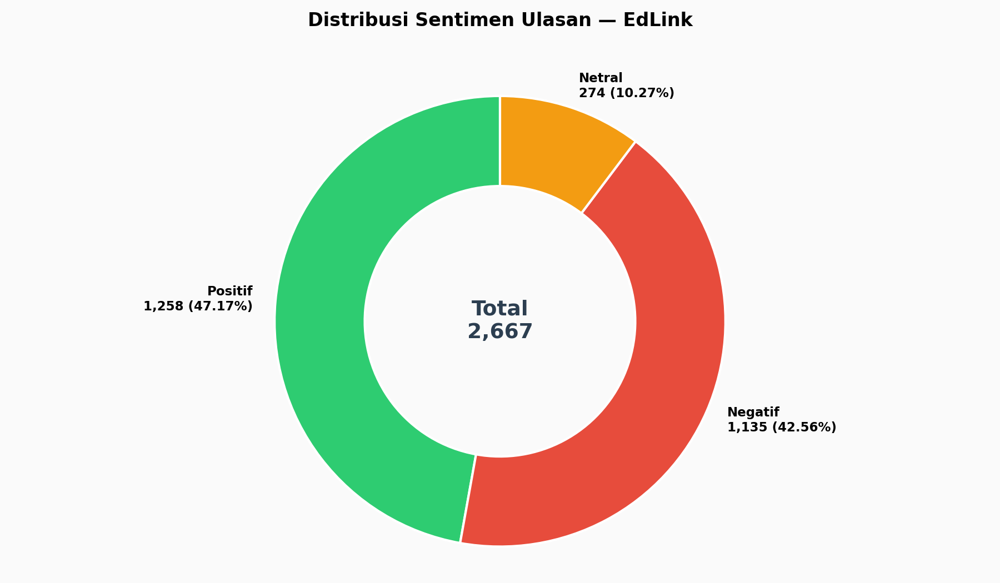
Nama file: 01_sentiment_distribution_pie.png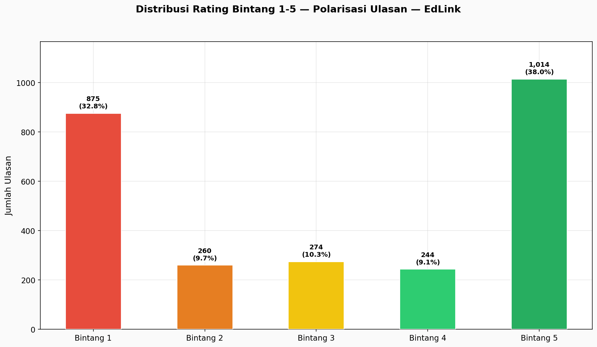
Nama file: 02_rating_distribution_raw.png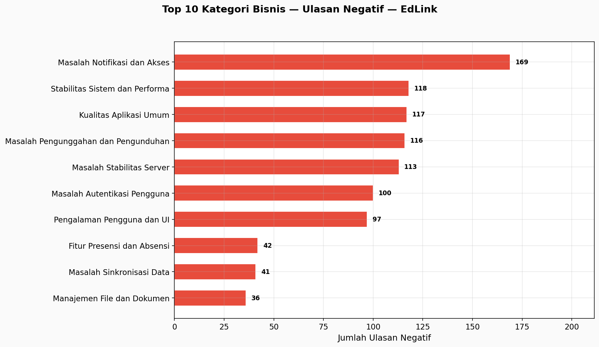
Nama file: 03_top_negative_categories.png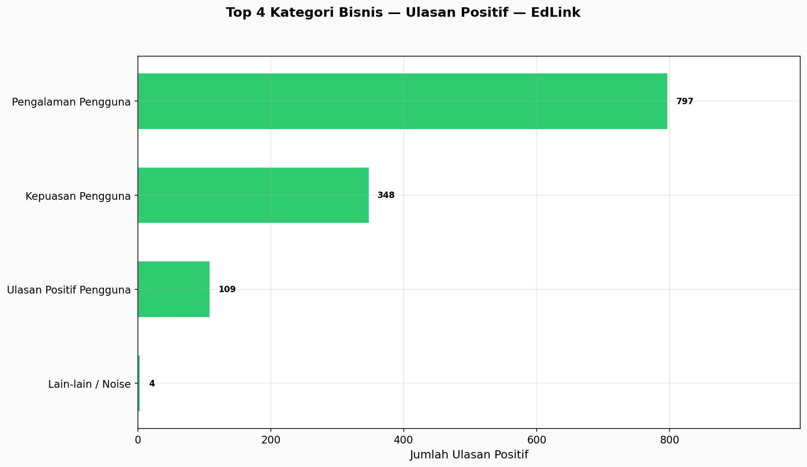
Nama file: 04_top_positive_categories.png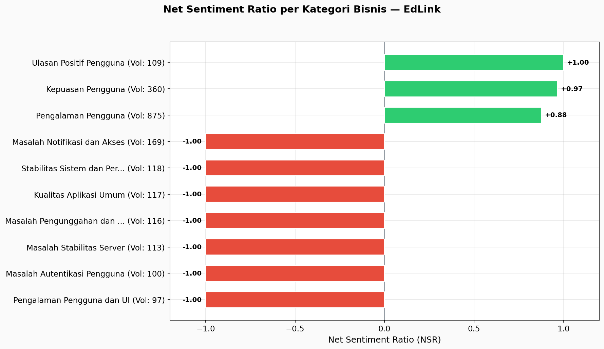
Nama file: 05_net_sentiment_ratio.png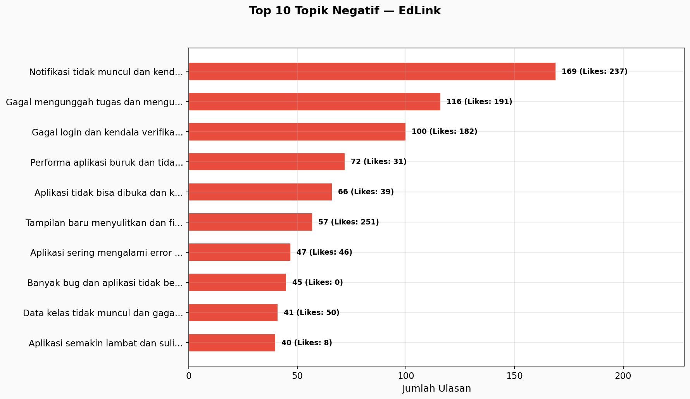
Nama file: 06_top_negative_topics.png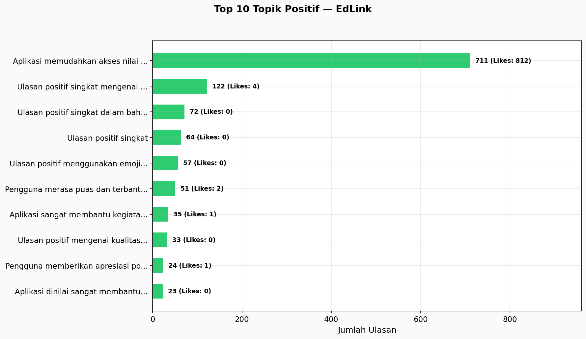
Nama file: 07_top_positive_topics.png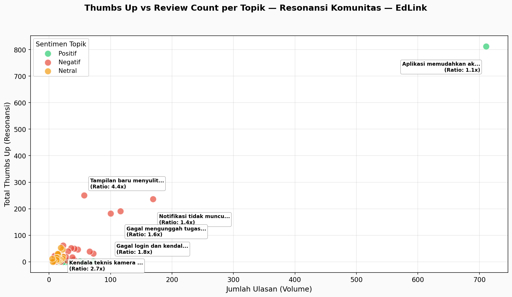
Nama file: 08_thumbs_up_vs_review_scatter.png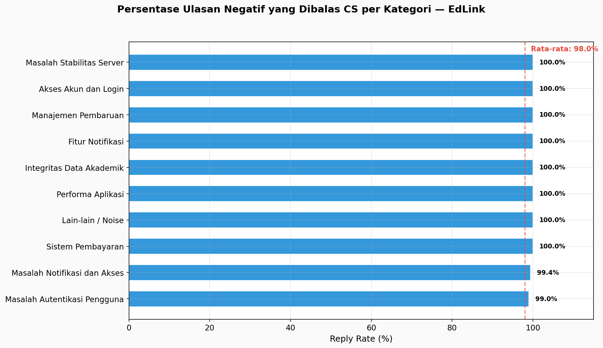
Nama file: 09_cs_reply_rate.png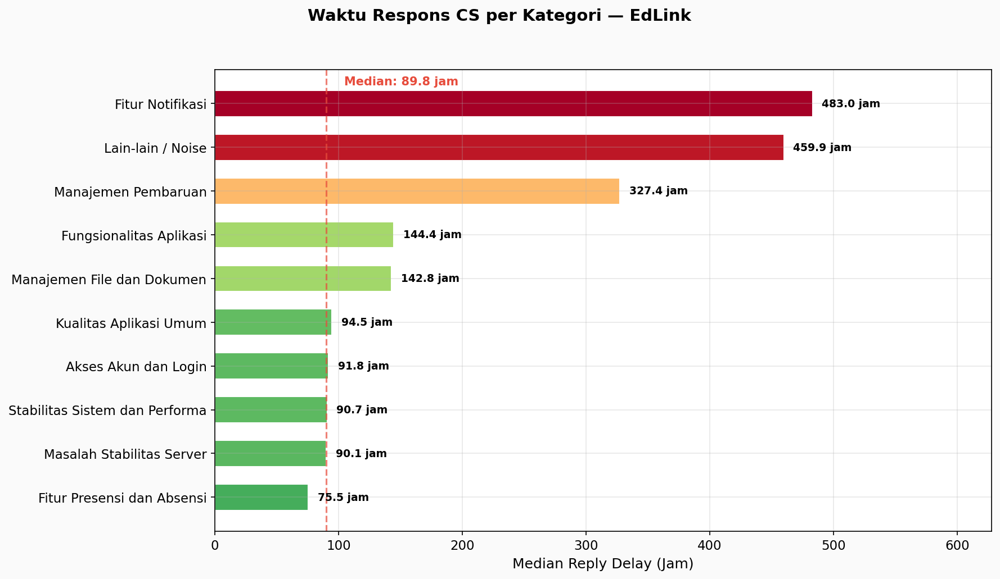
Nama file: 10_cs_reply_delay.png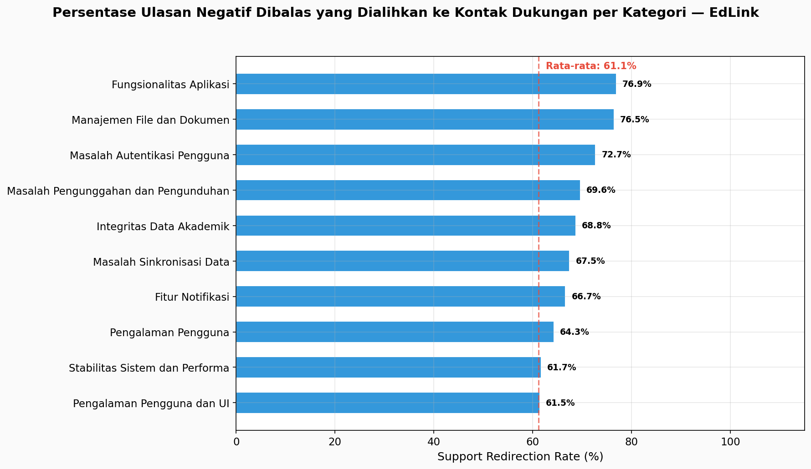
Nama file: 11_cs_support_redirect_rate.png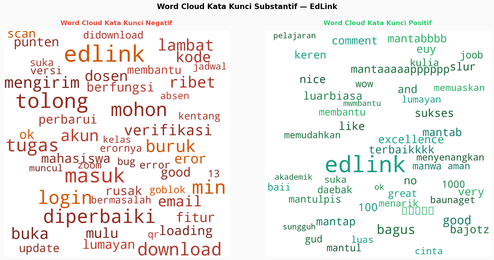
Nama file: 12_top_keywords.png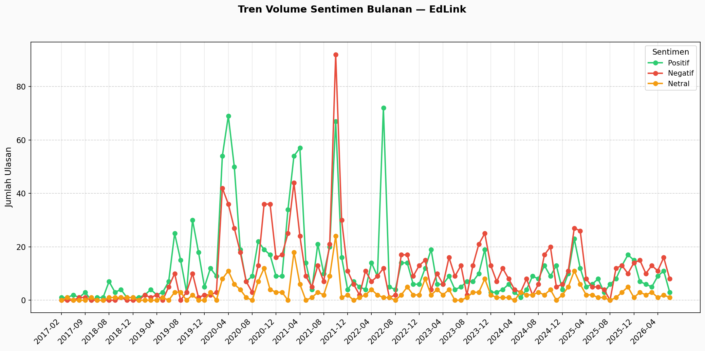
Nama file: 13_monthly_trend.png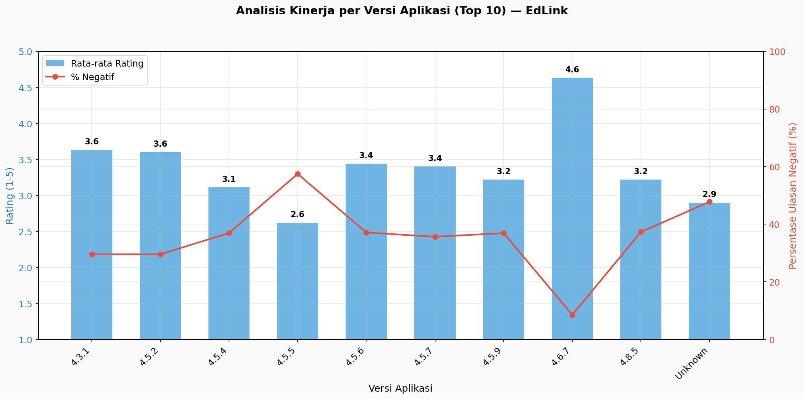
Nama file: 14_app_version_analysis.png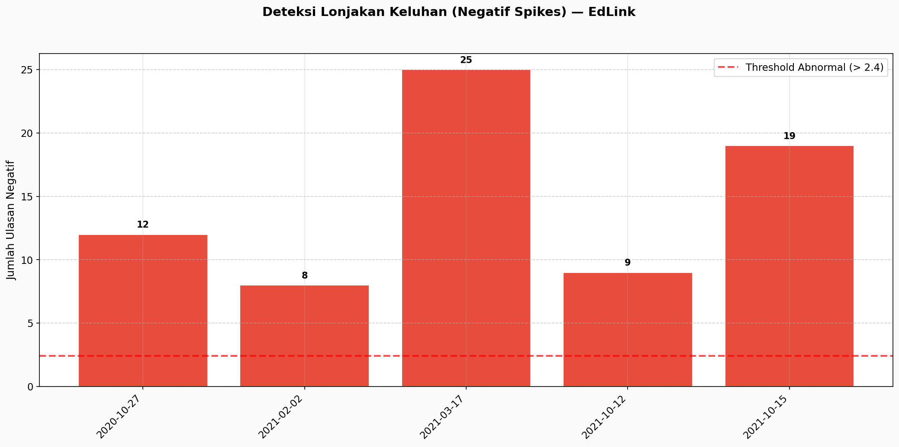
Nama file: 15_spike_detection.png